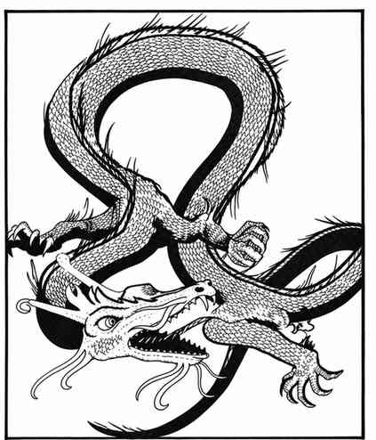

金龙 · Gold Dragon（Draco Orientalus Sino Dux）
 |
|
金龙可栖居于任何气候环境，但巢穴总在坚固石造建筑中，无论是洞穴还是城堡。它们喜爱贵金属与宝石，并以珠宝、珍珠为食；所有金龙都守序、正义而善良。金龙可以无害地变形为动物或人类，因此通常会以其他形态现身。
金龙可以爪、爪、咬攻击，也可使用两种吐息之一：长 9 寸、底部直径 3 寸的火焰锥，或长 5 寸、宽 4 寸、高 3 寸的氯气云。金龙还能施展一至六环法术：幼龙只有一个一环法术，少年龙有两个一环法术；之后每进入一个新年龄阶段，便获得两个更高环阶的法术，直至老年阶段。极老与古金龙还能施展六环法术。因此古金龙每环各有两个一至六环法术，并且每天能使用三次变形术。金龙极其聪慧，所用法术通常品质上乘，其中至少半数拥有正式法术书。
上一节：赤铜龙 · Copper Dragon（Draco Comes Stabuli）
下一节：绿龙 · Green Dragon（Draco Chlorinous Nauseous Respiratorus）